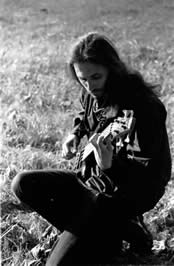
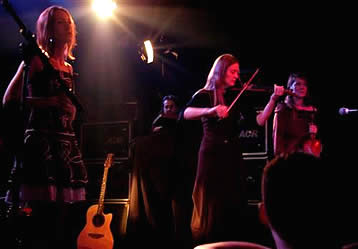

Entrevista
de Sombre Cÿr a Andreas Ohle - Dark Heart - 2005
Em primeiro
lugar, conte aos nossos leitores um pouco sobre você e
seu desenvolvimento musical. Há quanto tempo existe o
Dark Sanctuary e quais os componentes atuais? Qual
é a história da banda?
Nossa história é bastante longa e existimos como
uma banda desde 1996. Mas os membros são os mesmos há
muito tempo (somos em seis músicos). Sobre desenvolvimento
musical, nós tentamos nos envolver em cada álbum
novo, mas mantendo a atitude dos trabalhos anteriores, com o
modo para compor, etc. O ano de 2006 será muito difícil,
porque nossos 5º e 6º álbuns serão lançados.
Sua
música combina metal, clássico e elementos de
estilo gótico para uma sonoridade muito especial com
uma atmosfera obscura. Há alguma influência musical
ou experiência em sua infância que influenciou para
este tipo de música?
Metal? Não realmente. Nós tocávamos no
passado mas não em um álbum do Dark Sanctuary.
A propósito, nós combinamos algumas de nossas
canções com a atmosfera do Metal, mas elas serão
lançadas depois, provavelmente em 2006. De qualquer maneira,
eu concordo com clássico e elementos de estilo gótico
e queremos acrescentar o tradicional e medieval, porque eles
foram as primeiras referências que nós usamos,
em vez de gótico. Agora as pessoas dizem que nós
somos uma banda de estilo gótico, mas nós não
somos. Mas, há pouco tempo usamos alguns elementos para
criar atmosferas diferentes em nossos últimos álbuns.
Sobre influências, é difícil comentar porque
nós escutávamos apenas Heavy Metal.
Eu não penso que nós fomos influenciados por muitas
bandas, mas só com nossas almas. No princípio
nós criávamos canções reunidos nos
ensaios. Agora Arkdae e Hylgaryss compõem mais "em
casa" e quando nós ensaiamos é que organizamos
as canções. De qualquer maneira, o espírito
da banda ainda é o mesmo, mas o modo para compor agora
é diferente.
O álbum
novo se chama Exaudi Vocem Meam Part I. O que significa
este título?
Significa Ouça meu chamado. Eu penso que o título
explica o que nós desejamos transmitir.
As músicas
dos álbuns mais recentes têm trechos mais "silenciosos",
como Las de L`être-L`envers Du Miroir. Qual papel
tem o silêncio, nas músicas do Dark Sanctuary?
Bem, Las de l"Etre era um álbum conceitual,
com canções lentas e outras mais aceleradas. De
qualquer maneira, é muito interessante trabalhar isto.
Com os dois últimos álbuns (Las de Etre e
Memoire Blessees) nós percebemos que, até
mesmo se nós gostamos de todas as canções,
não gravamos algumas canções realmente
atmosféricas como nós fizemos nos dois primeiros
álbuns. Assim, nós tentamos trabalhar em algo
mais calmo, mais ambiente, mais atmospheric neste novo álbum
duplo.
O
novo CD soa um pouco melhor que o último. Você
mudou algo no processo de gravação? Seu CD novo
tinha sido gravado por Markus Stock no estúdio de Klangschmiede.
Como você entrou em contato com ele? Você gravou
o álbum em uma atmosfera especial?
Nossos dois últimos CD’s também foram gravados
no estúdio de Klangschmiede e o processo era o mesmo
para todas as três gravações. Eu não
posso explicar esta diferença; humor, material, combinação...
Pode ser tudo! A propósito, eu penso que o último
álbum Memoire Blessees tem uma sonoridade muito
boa.
Ao escutar
Exaudi Vocem Meam Part I parece que há muitos
momentos pensativos. Você teve pensamentos especiais ou
visões quando estava gravando o álbum? A música
do Dark Sanctuary é algo que só pode existir pela
imaginação do ouvinte?
Bem, para cada gravação nós precisamos
nos concentrar no que estamos fazendo, cada instrumento, cada
letra, cada som. Assim nós tentamos aplicar uma atmosfera
mais profissional. Assim, eu penso que o verdadeiro sentimento
está na composição das canções,
no local de ensaio. Seguramente, nós temos alguns pensamentos
especiais e visões durante a gravação,
mas são difíceis de explicar.
Há
uma canção no álbum chamado Dein kalter
Stein que eu gosto muito. Qual é a idéia
atrás desta canção? Você tem certas
mensagens em suas canções? Nelas, você quer
contar algo?
Sim, esta canção é uma "canção
de amor" com uma mulher que está enterrada viva
e o amante dela está na superfície. É um
diálogo entre duas pessoas que não se vêem
porque o amante não sabe que a namorada dele foi enterrada
viva, mas ela sente a presença dele que reza na tumba.
Esta é a atmosfera muito obscura, mas de um certo modo
esta é uma mensagem para dizer que as pessoas nunca escutam
um ao outro, nós estamos perto um do outro e nunca sentimos.
Basicamente, nossas canções são tristes,
mas sempre têm uma mensagem atrás.
Quando nós
podemos esperar uma nova turnê do Dark Sanctuary? Haverá
uma excursão européia?
Eu ainda não sei. Nós temos alguns concertos para
fazer em 2006 e esperamos tocar na Alemanha. Uma turnê
é pouco provável porque nós somos em seis,
mas faremos o melhor.
Muito
obrigado por esta entrevista. Nós estamos muito contentes
de ter essa oportunidade. Suas últimas palavras para
nossos leitores:
Obrigado, o prazer é nosso, de ter a oportunidade de
falar aos seus leitores. Sinta a chama obscura dentro de você.
Extraída
de www.darkheartmagazin.de
Traduzida
e adaptada por Spectrum